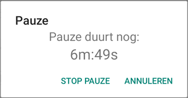
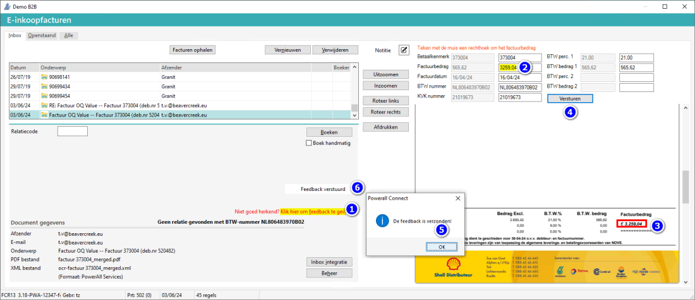
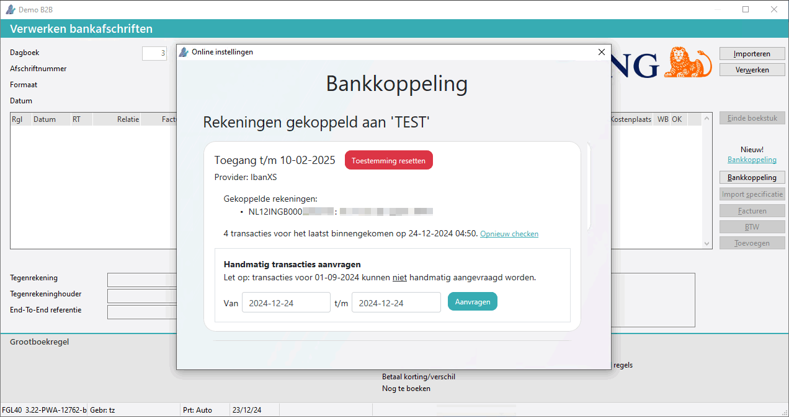
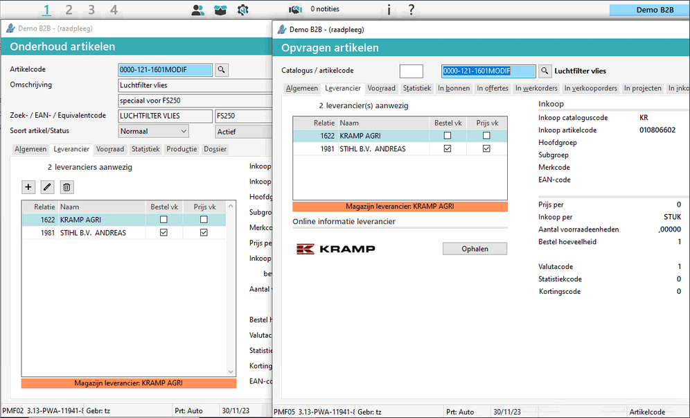
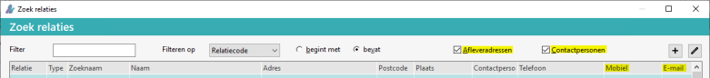

Regelmatig worden er een nieuwe hoofdstukken of FAQ's toegevoegd aan deze documentatie.
Daarnaast worden veelgestelde vragen van klanten regelmatig toegevoegd en geactualiseerd.
Opmerking: Voor alle wijzigingen zie Release notes of Wat is nieuw in Powerall Connect?.
| Nieuwe Powerall logo: |
|
De uitstraling van Powerall is krachtiger / stoerder geworden.
Nieuwe slogan > Powerall: Grip that never slips
Nieuw kleur > iets feller turqoise
Release notes 3.30 - Beta / Release notes 3.30 beta versie, eind mei
Machine portaal bij Instellingen is het mogelijk om externe links toe te voegen in het Dashboard of Navigatiemenu, vanaf mei 2026.
Bij Peppol kunnen vier extra velden, zoals orderreferentie, ingegeven worden, vanaf versie 3.30.
Bij Instellingen machines kunnen Duitse machine (factuur)teksten ingegeven worden voor Duits talige klanten, vanaf versie 3.30.
Automatische accepteren van kratten i.c.m. picken, zie Hoe werkt picken / gereserveerd bij werkorders? vanaf versie 3.30.
Machine kaart verzenden nieuw een aanbiedingsprijs kan ingegeven en e-mail bericht template, in eigen stijl, kan gebruik worden vanaf versie 3.30.
Bij een Offerte is het mogelijk om de relatie te wijzigen: Hoe wijzig ik de relatie van een offerte of werkorder? vanaf versie 3.30 instelling.
Op de Werkbon app is het mogelijk om Artikel informatie op te vragen, vanaf versie 3.30.
Op de Werkbon app is bij de interne Notities de tekst uitgebreid.
Bij Werkorders wordt in de voet het geregistreerde - en gefactureerde aantal uren / bedrag getoond. Hierdoor is een verschil gemakkelijker te zien, vanaf versie 3.30.
Release notes 3.29/ Release notes 3.29 stabiele versie, vanaf einde mei
Factuur afdrukken / verzenden nieuw, vanaf versie 3.29.
Bij Machine levering / ontvangst is extra info toegevoegd, namelijk de leverancier en bij levering ook de eigenaar, vanaf versie 3.29.
Vrijgeven offerte naar een bestaande Werkorder, vanaf versie 3.29.
Werkbon app optie direct verzenden bij interne Notities, vanaf versie 3.29.
De nieuwe scanner op de Werkbon app, via de camera, vanaf versie 3.28, heeft de volgende voordelen:
Sneller en nauwkeuriger, in en uitzoomen - en zaklamp functie bij weinig licht.
De scan software, via de camera, is vernieuwd:
Pop-up informatie scherm wordt getoond.
Als Niet meer tonen aangevinkt wordt, verschijnt deze pop-up niet meer.
Scan functie wordt getoond.
Scannen bij weinige licht, zaklamp kan gebruikt worden, druk op  .
.
Scannen m.b.v. de zaklamp.
Zie afbeelding #4 waarbij de zaklamp aan, let op mogelijke overbelichting.

Op de Werkbon app kan de Pauzetabel ook toegepast worden, vanaf versie 3.28.
Hiervoor is de instelling gebruik pauzetabel toegevoegd bij Instellingen werkorders, tabblad Werkbon app.
De betreffende monteur moet gekoppeld zijn aan een Pauzetabel.
De pauze begint en stopt automatische op de ingestelde pauzetabel tijd.
Het is mogelijk om de pauze te stoppen, om verder te gaan met het werk.
Als een gebruiker zelf al eerder de pauze gestart heeft, dan loopt de pauze zolang als deze in de pauzetabel staat.
Minder dan 1 minuut wordt niet geregistreerd.
Als de pauze meer dan 1 uur duurt, wordt bijv. 1u:4m getoond, zonder seconden.
Op de werkbon app verschijnt dan onderstaande melding:
Pauze duurt nog:
x minuten : Y seconden

Bij STOP PAUZE:
De pop-up verdwijnt, pauze stopt en wordt 'later' geregistreerd.
Bij ANNULEREN:
De pop-up verdwijnt en komt weer terug. Pauze (tijd) wordt 'later' geregistreerd (bij elke annulering).
Bij afsluiten Werkbon App komt pop-up weer terug.
Opmerking: Neem contact op met onze helpdesk om te inventariseren of dit binnen uw organisatie toepasbaar is. Zij schakelen in overleg de planning in, om een consultant in te plannen.
'Later' is bij Einde werkdag.
Als er geen pauze (tabel) is ingesteld, wordt de gebruiker geacht zelf zijn pauze te registreren.
In Powerall is de Duitse vertaling beschikbaar, zie FAQ Taal.
Bij Peppol een link toegevoegd voor controleer Peppol-nummer: Peppolnummer controle.
Boeken inkooporder machines nieuwe kostensoorten zijn toegevoegd bij grootboekrekening met een kostendrager.
Selecteren servicemeldingen nieuw: het adres is toegevoegd in kolom Postcode / adres.
Standaard journaalposten importeren / boeken er kan ook een kostendrager geïmporteerd worden nieuw.
Release notes 3.27 - hotfix verbeterde versie van 3.27.
Verhuur planbord 2.0 offerte en dubbele contracten zijn zichtbaar en de beschikbaarheid en opmaak is verbeterd, vanaf versie 3.27.
Al de apps zijn bijgewerkt en zitten op Android versie 15+.
Barcode scanner bijgewerkt / de barcodescanner software is geüpdatet.
Beschikbaar in de Google Playstore, zie Powerall Barcode.
Update Barcode app.
De barcodescanner-software is geüpdatet. Bij eerdere versies was het niet mogelijk om op de scanner te controleren of een artikel bestond, en het terugkijken van gescande onderdelen was omslachtig. De nieuwe Barcode App biedt aanzienlijk meer functionaliteit en intelligentie.
Artikelen kunnen eenvoudig worden gescand, inclusief EAN-codes en equivalentnummers. Dankzij de realtime verbinding met de Powerall-database wordt direct het juiste artikel opgezocht. Indien een artikel niet wordt herkend, verschijnt er een foutmelding.
De controle via een pop-up bij het uitlezen is komen te vervallen. Deze controle vindt direct plaats tijdens het scannen. Het uitlezen gebeurt voortaan via een directe verbinding met de server of hoofdcomputer, in plaats van via een werkstation.
Voor het achteraf bekijken van gescande gegevens blijft het Overzicht barcode scanningen beschikbaar, waarin alle gescande informatie wordt weergegeven.
Belangrijkste verbeteringen:
Onze doelstelling is om een intelligente scanner te ontwikkelen met steeds meer functionaliteiten. Daarom is de 'pop-up met gescande artikelen' niet langer nodig of beschikbaar. Bij Overzicht barcode scanningen zijn nog steeds alle gescande gegevens te zien. Belangrijkste verbeteringen:
Bij het scannen van een artikel wordt direct de artikelcode weergegeven.
Artikelen kunnen worden gescand op zowel EAN-code als equivalentcode.
Verzenden
De artikelen worden vóór verzending gecontroleerd op geldigheid.
Bij het verzenden worden de gegevens direct en automatisch verwerkt, zonder dat verwerken Uitlezen barcode scanner open hoeft te staan.
Uitzonderingen zijn Balie i.c.m. bonnen en Bestellen i.c.m. goedkeuren.
Bij werkorders kunnen ter info ook de klantnaam en referentie worden getoond.
In de CRM app wordt bij Machine transacties de status van de werkorder weergegeven.
Een werkorder heeft de volgende status:
Open - bij geen artikelen en uren nieuw.
In Uitvoering - bij artikelen of uren incl. bedragen nieuw.
Gereed - de werkorder is vrijgegeven.
Hierdoor zijn de open - en lopende werkorders met de prijzen beter inzichtelijk.
Deze bevat Materiaalverbruik, Eerder geregistreerd en Bestellen in één scherm, vanaf versie 3.27.
Onderhoud machine merken toegevoegd fabrikant
Bij Opvragen artikelen, Opvragen relaties F6 en Opvragen machines (MO) is het mogelijk om in diverse tabbladen de regels te sorteren.
Verhuur planbord 2.0 verbeterd, maandweergave toegevoegd.
Peppol integratie mogelijk voor een relatie met alleen een GLN-nummer nieuw.
Vrijgeven verkooporder is mogelijk via de Taakplanner nieuw, vanaf versie 3.27.
Werkbon app Ritten verbetering van de weergave van het volledig (bezoek) adres.
Powerall Schaduwkopie nieuw incl. logs.
Webshop en Vooruitbetaling
Bij Zoek artikelen worden bij Granit en TVH alternatieve artikelen getoond.
Powerall Connect versie 3.26 vervalt, de betreffende updates zitten in 3.27.
Welke leveranciers integraties zijn er?
Toegevoegd: Oosterberg parts inquiry en digitale order.
Machine portaal verbetering van de zoekfunctie o.a. bij servicemeldingen en de uitgebreide teksten van een werkorder zijn te zien.
Op de Barcode scanner kan er op een Werkorder een dynamische samenstelling aangemaakt worden.
Via Invoeren kassabonnen kan ook een Kleine machine of Machine verkocht worden.
Hoe, wat m.b.t. Peppol nieuw geldt ook voor inkomende facturen
Hoe werkt ondertekenen offerte i.c.m. Stiply? Nieuw standaard of eigen e- mailtekst.
Integraties nieuw CNH
Overzicht matching controlelijst FAQ's toegevoegd
Vaste activa rapportage de rapportage keuze jaaroverzicht is verbeterd, zodat e.a. beter gecontroleerd kan worden.
Machine inkooporder nieuwe optie voor alleen Machine inkooporders (IM)
Vooruitbetaling op een werkorder nieuw.
Bij Onderhoud artikelstructuren is het vinkje Dynamisch toegevoegd.
Bij het scherm Artikel samenstelling (dynamisch) kunnen dan artikelen toegevoegd worden.
Bij Onderhoud kassa's kan een Kostenplaats gekoppeld worden.
De kolom Gepickt is ook zichtbaar bij Invoeren / wijzigen werkorders bij picken orders.
Hoe werkt partnershop order doorfacturering (Kramp / Granit)? geldt ook voor Granit.
Jaarafsluiting verbeterd:
Bij e-Factuur kan een betaallink i.c.m. MultiSafepay in de e-mail toegevoegd worden.
Kopiëren uit catalogus of online informatie nieuw vinkje Aanvullen na aanmaken toegevoegd.
MultiSafepay mutaties kunnen geïmporteerd worden bij Inlezen/verwerken bankafschriften.
Bij selecteren van een Kleine machine kan er een Servicemelding aangemaakt worden Instelling.
Hoe, wat m.b.t. scan en herken? Mogelijkheid om feedback te geven op een ingescande pdf bon of factuur.
Het is mogelijk om een reactie of feedback te geven op het ingescande document, bijv. als een factuurbedrag niet klopt, vanaf versie 3.21.
Om dit te doen, doorloopt u de volgende stappen:
Druk op de regel Klik hier om feedback te geven.
Rechts verschijnen de Herkende waardes.
Corrigeer de Juiste waarde, indien nodig.
Markeer de betreffende waarde, d.m.v. een rode rechthoek, op het PDF.
Kies voor de knop Versturen.
De pop-up De feedback is verzonden verschijnt.
Kies voor de knop OK.
De tekst Feedback verstuurd verschijnt.

Powerall Connect informatie er is een link toegevoegd naar Linkedin/Powerall en Facebook.
Kassa pin terminal nieuw.
Selecteren machines tabblad Alle, nieuw vinkjes voor status en configuratie met selectie element 1 t/m 4.
Het volgende is van toepassing bij machine locaties:
Bij Onderhoud machines (MBB) is het mogelijk gebruik te maken van de magazijnlocaties.
Er kan gebruik gemaakt worden van vrij invulbare locaties of standaard locaties.
Als er bij het betreffend magazijn locaties aanwezig zijn, kunnen deze d.m.v. het loepje of F4 geselecteerd worden.
Bij Instellingen machines kan bij het veld magazijnlocatie ingesteld worden of deze al of niet verplicht is.
Bij Onderhoud magazijnlocaties (ABZ) kunnen de (machine) locaties, per magazijn, ingegeven worden.
Hoe werkt WhatsApp? nieuw
Het volgende is in te stellen bij Werkorder(s):
De werkorder datum t/m. Standaard zijn de orders t/m vandaag zichtbaar.
Hierdoor is het mogelijk om de orders van volgende <XX> dagen / week standaard te zien.
Controle op dubbel gebruik van een servicenummer in een werkorder, als het servicenummer gewijzigd wordt.
Bij Instelling artikelen is de instelling HS-code toegevoegd, zie ook:
Powerall Connect API, FAQ bijgewerkt.
Vanuit de Webshop kan een expeditiecode mee te geven naar Powerall Connect.
Doorverwerken facturen is sneller gemaakt.
Kassa De Betaal knop teksten zijn flexibel instelbaar. Er zijn 3 extra betalingsopties toegevoegd, totaal zijn er 5 knoppen optioneel.
Werkorder offerte. Op een Offerte voor een werkorder wordt standaard de werkopdracht / factuurtekst weergegeven.
De Barcode app is beschikbaar in de Google Playstore, zie Powerall Barcode.
De Powerall Barcode app is alleen te gebruiken op de 'Powerall' barcodescanner.
Powerall Connect API nieuw
Bankkoppeling De knop Bankkoppeling is toegevoegd, met gegevens over de koppeling.
De toestemming kan gereset of de bankkoppeling kan ontkoppeld worden. 
Machine en GPS tracker nieuw
De OCI of bestelkoppeling met DAF is vrijgegeven.
Het volgende geldt hierbij:
Met OCI is het mogelijk om direct vanuit een werkorder bij de DAF webshop te bestellen, met de keuze ‘auto confirm’ aan of niet.
Hierbij worden de bestelde webshop artikelen toegevoegd op de werkorder en er wordt ook een inkooporder aangemaakt in Powerall Connect.
Met de 'digital order' koppeling kan ook direct vanuit Powerall besteld worden. De order levering loopt via DAF en de dealer waar je klant bent.
Voor meer informatie zie: DAF Bestelkoppeling.
Bij Opvragen artikelen is het mogelijk om de (afgesproken) prijs en voorraad op te halen d.m.v. zogenaamde ‘parts inquiry’.
Voor meer informatie zie: Artikel info DAF.
Deze koppeling moet eerst aangevraagd worden en wordt door DAF geactiveerd.
Bij het zoeken naar een artikel, op de Powerall Werkbon App, kan er op meerdere zoektermen gezocht worden.
Barcode scanner nieuw Urovo scanner
I.c.m. de barcodescanner kan er een serveradres ingevuld worden.
Bij het aanmaken van een catalogus artikel verschijnt er een melding, als het artikel vervangen is door de leverancier.
Invoeren kassabonnen nieuw functie toetsen bij afrekenen, bijv. F12.
Nieuw incl. afronden bij Contant betaling op een apart grootboek.
Neem contact op met de planning om dit in te richten.
Machine samenstelling nieuw
In onderstaand geval, is bij het magazijn waarmee ik ingelogd ben een afwijkende magazijn leverancier gekoppeld en getoond.
Dit is bijv. het geval, bij een bepaalde vestiging, waar besteld wordt bij de leverancier om de hoek en niet bij het standaard magazijn.

Het veld afwijkende bestelleverancier op tabblad Voorraad kan hiervoor gebruikt worden.
| Afwijkende bestelleverancier | Selecteer hier de afwijkende bestelleverancier, voor het standaard magazijn van de gebruiker: - 0 Geen afwijkende leverancier (standaard). - <Relatie - Leveranciersnaam>. Deze geselecteerde leverancier gaat boven de voorkeur leverancier. Deze Magazijn <leverancier> verschijnt ook op tabblad Leverancier. Hierbij bestelt dit magazijn bijv. niet 'standaard', maar lokaal. |
Ritten nieuw
Werkorder uren registreren nieuw bij Urenregistratie controle selectie op afdeling.
Inlezen/verwerken bankafschriften
Bankkoppeling nieuw
Hoe, wat m.b.t. Peppol nieuw dit is een betaalde service
Hoe, wat m.b.t. de Firewall IP- subnets bijgewerkt
Inkooporder details toegevoegd
Uitlezen barcode scanner bijgewerkt.
Afletteren grootboekmutaties nieuw kolom Kostendrager
Wizard Nieuwe relatie nieuw zoeken op (Postcode,) KvK, BTW-nummer en Naam, ook voor Belgische bedrijven.
De SendCloud verzendwijze is geïntegreerd i.c.m. order picken 2.0.
Interne werkorder vrijgeven nieuw bij de optie 'direct doorverwerken' ja, huidige periode verschijnt er geen pop-up scherm meer.
Welke leveranciers integraties zijn er? bijgewerkt
Bij een verkoop van een kleine machine kan automatisch een servicemelding aangemaakt worden, vanaf versie 3.10.
Release notes: powerall.nl/release-notes/3.11 verplaatst
Systeemeisen minimale eis wordt Windows Server 2016 (was 2012)
Hoe, wat m.b.t. scan en herken? vernieuwd eenvoudiger in te stellen / te proberen.
Zoek relaties nieuwe kolommen mobiel en e-mail
Incl. 'zoek'vinkjes Afleveradressen en Contactpersonen.

50x35.tspl schapkaart nieuw
Aanmelden vervoerder opnieuw Aanmelden zending bij een vervoerder.
Systeemeisen in de Firewall moet poort 1433 uitgaand openstaan.
Favorieten 3.0 menu en F4
Nieuw hoofdstuk bij Verkoop voor:
De volgende hoofdstukken zijn hernoemd:
Inkoopfacturen was Crediteuren
Verkoopfacturen was Debiteuren
De volgende hoofdstukken zijn verplaatst:
Artikel verwijzing aanleggen nieuw wijzigen inkoop artikelcode met leveranciers selectie.
E-facturen verbeterd
Selecteren servicemeldingen nieuwe kolom ordergegevens
Een nieuwe licentie module WMS (warehouse management systeem) is toegevoegd.
Overzicht orders (te picken) 2.0 het volgende is aangepast.
Tabblad Gepickt gewijzigde knop Correctie picklist
Nieuw vinkje automatisch vernieuwen.
Nieuw bij Voorgestelde levering Print colli label (printer-knopje) en de knop Correctie picklist.
Tabblad Te verzenden en nieuwe knop Correctie zending en nieuwe kolommen Factuur, bedrag en Fiat(tering) met een selectie hierop.
Nieuw het zoeken op collinummer / colli-barcode (naast zending) is hierbij mogelijk.
Tabblad Nog vrij te geven nieuwe knop Correctie zending
Het vinkje Directe selectie is toegevoegd, de tabbladen worden hierbij direct gevuld.
De knoppen Nieuw en Wijzigen zijn op elk tabblad beschikbaar.
Zoek afleveradressen, nieuwe wijzig en toevoeg knop.
De garantie omschrijving wordt getoond bij:
Een Machine transactie.
Opmaak van deze documentatie is bijgewerkt conform Powerall Connect 3.0
Nieuw machine aanmaken of kopiëren RDW vinkje gewijzigd naar Online.
Overzicht orders (te picken) 2.0 het volgende is aangepast.
Tabblad Te picken nieuwe knop Wijzig picklist en Print picklist
Tabblad Nog vrij te geven, nieuwe knop Vrijgeven alle
Installatie Werkbon App bijgewerkt.
Webshop koppeling info webx3interface.creeksites.net/connect-api
De volgende modules zijn samengevoegd tot één module Artikelen catalogi:
Artikelen catalogi leveranciers
Artikelen Parts locator
Artikelen integratie EPC
Inkooporders EDI
Koppeling werk-/verkooporder met inkooporder bijgewerkt
Bij de volgende Selecteren programma's is ook het veld Direct zoeken bon of order toegevoegd.
Een werkorder kan hiermee ook ingescand worden.
Hierbij kan direct het betreffend ordernummer ingegeven worden.
Hoe voer ik een jaarwissel uit? bijgewerkt
Einde werk Werkbon App bijgewerkt
Hoe, wat m.b.t. verzamelfacturen ter info
Verwachte goederenontvangst, ophalen ASN ook voor Kramp.
Bij Instellingen bedrijf (BIB) is het adres 2 en de postcode 2 gesplitst in twee aparte velden postcode en woonplaats.
Nieuwe wizard voor Instellingen externe communicatie (BAC)intern
Bij een BtB koppeling is het inkoopnummer / omschrijving van de leverancier toegevoegd.
Bij de order ingave is het veld postcode en woonplaats gesplitst in twee aparte velden.
Dit om mogelijke problemen bij vervoerders te voorkomen.
Taakplanner instellen nieuwe overzichten toegevoegd:
E-inkoopfacturen, automatisch ophalen
Invoeren kassabonnen bij Kassa afrekenen, referentie en ordergegevens toegevoegd.
Toegevoegd valutateken bij Onderhoud valutacodes
Instellingen bedrijf valutacode incl. valutateken.
Het valutateken wordt gebruikt bij de Machines CRM app voor de artikel en machine prijzen.
CBS aangifte bijgewerkt m.b.t. 2022
Overzicht orders (te picken) 2.0, tabblad Te picken, controle of order nog in gebruik is.
Taakplanner instellen nieuwe overzichten toegevoegd:
Proef- en saldibalans
Balans / Winst & verlies
Verwachte goederenontvangst nieuwe zoek velden referentie, artikel en ordernummer.
Periodewissel, de nieuwe of volgende periode wordt automatisch bepaald.
Selecteren servicemeldingen toegevoegd Vinkje alleen lege voorkeursmonteur.
Wat doe ik als het betaalbestand / incassobestand afgekeurd wordt?
Onderhoud machines nieuwe gebruikstatus Demo
Powerall CRM app nieuwe versie
Verwerken prijswijzigingen (artikelen)
Taakplanner instellen nieuwe programma's toegevoegd.
De  Plus-knop en een
Plus-knop en een  Pennetje-knop zijn toegevoegd bij:
Pennetje-knop zijn toegevoegd bij:
Onderhoud standaard journaalposten voorbeeld tabel toegevoegd.
Bij Instellingen werkorders kunnen artikelen met de volgende artikelstatus uitgevinkt worden, zodat deze niet meer zichtbaar zijn nieuw:
Niet meer leverbaar, Op aanvraag en Uitlopend.
Dossier Werkbon App nieuw
Overzicht orders (te picken) 2.0 nieuwe optie Gepickt (was Te leveren) / Te verzenden / Nog vrij te geven
Onderhoud machines t.b.v. Advertentiekoppeling (machines) nieuw veld Prijs weergave incl. / excl. BTW.
Onderhoud standaard journaalposten automatische verwerking
Verwachte goederenontvangst nieuw Ontvangstlabels.
Taakplanner instellen nieuw
Afletteren grootboekmutaties nieuw vinkje om alles aan te vinken.
E-inkoopfacturen (geavanceerd). tabblad Betaalbaar nieuw kolom Openstaand bedrag is toegevoegd.
Overzicht orders (te picken) 2.0 nieuw Te picken ordersoort en totaal orders / regels in de voet.
Selecteren inkooporders nieuw inkoop ordertype selectie.
Bij Inkoop rapportages is dit veld inkoop ordertype toegevoegd en kan er op geselecteerd worden.
Nieuwe filter overzichten toegevoegd m.b.t. het alleen zoeken in de overzichten programma's, bijv. zoeken op de term analyse:
Belangrijk: Vergeet niet om de filter terug te zetten naar Alle bestanden.
Boeken goederenontvangst, bij machine inkoopfactuur kan het SN en kenteken bijgewerkt worden in de lopende orderteksten.
Onderhoud machines nieuwe vinkje Buitenlands kenteken bij soort bedrijf is Agrotechniek.
CBS aangifte i.p.v. CBS aanpassing per 1-1-2022.
Bij de opvraag programma's worden de velden weergegeven zonder rand, als 'scherm' veld.
Van welke leveranciers is een EDI koppeling beschikbaar? nieuw Homburg en Manitou en nieuwe kolom Digitale order.
Selecteren inkooporders nieuwe kolom Digitale order
Goederenmatching bijgewerkt
Selecteren matching manco's apart topic, nieuw Wijzig reden.
Hoe komt het dat artikelen 'verdwijnen' van de werkorders i.s.m. de Werkbon App?
Hoe werk ik de APK of Tachograaf datum bij? nieuw Tachograaf tabblad Services
Beheer servicemelding nieuwe knop Gereed melden
Goederenmatching voorbeelden toegevoegd o.a. machine matching
EORI nieuw
Onderhoud keuringscodes nieuw Tachograaf-keuring
Hoe werk ik de APK of Tachograaf datum bij? geldt ook voor geplande Tachograaf-keurings datum
Selecteren machines nieuw tabblad Offerte
Hoe, wat m.b.t. de tellerstand registratie? kilometer registratie RDW
Advertentiekoppeling | Instellingen / basis controle machine op hoofd- en subgroepen
Opmerking: Het is mogelijk om standaard BTW-codes voor binnenland, EU en buitenland in te stellen. Dit kan bij instellingen debiteuren en Instellingen crediteuren, standaard zijn deze al ingesteld.
• Door dit te doen wordt automatisch bij Nieuwe relatie aanmaken de juiste BTW-code gekozen als een buitenlandse relatie wordt aangemaakt.
Overzicht dagstatistiek nieuw per land / BTW-code
Lay-out wijzigen toevoegen Artikellabels op A4 in 3 kolommen, zie FAQ
Van welke leveranciers is een EDI koppeling beschikbaar? nieuw Hikoki/Hitachi
Onderhoud dagboeken nieuw oudste boekingsperiode
Selecteren audit trail artikel mutaties bijgewerkt
Zoek artikelen bijgewerkt
Opvragen artikelencatalogus
Goederenmatching 3.0 nieuw dagboek Matching
Taakplanner nieuw / in menu
Multimagazijn overboeken bijgewerkt serienummer
Nieuwe offerte aanmaken nieuwe optie offertesoort Werkorder, met tabblad Werkomschrijving
Onderhoud artikeltracering multimagazijn
PP400 installatie PostNL nieuw
Werk controleren en aftekenen nieuwe optie in- / direct verwerken
Advertentiekoppeling (machines) bijgewerkt:
Kramp catalogus update nieuw
Onderhoud artikellocatie per magazijn (bijgewerkt)
Opmerking: De hoofdstukken (in de inhoudsopgave links) met een * zijn nieuw of gewijzigd.
Tip: Gebruik de uitvouw knop  (boven U bent hier:) om alle vragen uit - of in te vouwen.
(boven U bent hier:) om alle vragen uit - of in te vouwen.
Gerelateerde onderwerpen
Copyright ©
{kind=link}
{kind=link}
{kind=link}
{kind=link}